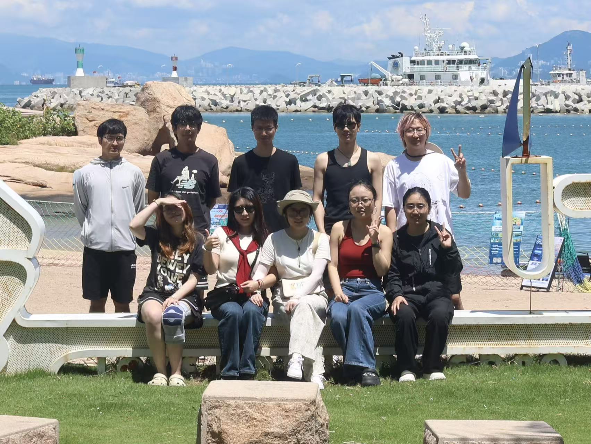

我们结合单细胞测量与基因调控研究，探索细胞命运如何被决定，以及如何被改变。We combine single-cell measurements and gene regulation research to understand how cell fate is determined and how it can be changed.
中国科学院深圳先进技术研究院 · 合成生物学研究所Institute of Synthetic Biology, Shenzhen Institute of Advanced Technology, CAS
同一个转录因子，为什么会让不同细胞走向不同命运？How can the same transcription factor lead cells to different fates?
细胞重编程不仅取决于转录因子的种类，也受到其表达剂量与组合关系的影响。我们结合基因扰动和单细胞测量，研究这些因素如何驱动细胞状态转变，并解析重编程结果的异质性。Cell reprogramming depends on transcription factor identity, dose and combinations. We combine genetic perturbations with single-cell measurements to investigate how these factors drive state transitions and contribute to heterogeneous outcomes.
02
活细胞测量与命运追踪Live-cell measurements and fate tracking
概念示意Conceptual illustration
如何把一个细胞当前的分子状态，与它未来的行为联系起来？How can we connect a cell’s molecular state with its future behavior?
传统转录组测量通常需要破坏细胞，难以继续追踪同一个细胞。我们关注保留细胞活性的分子测量方法，将转录组信息与后续刺激响应和分化过程相连接，研究细胞状态如何随时间变化。Conventional transcriptome profiling usually destroys the cell. We investigate measurements that preserve viability, connecting molecular profiles with subsequent responses and differentiation to study changes over time.
03
分化过程中的基因调控机制Gene regulation during differentiation
概念示意Conceptual illustration
转录因子与增强子如何共同控制细胞分化？How do transcription factors and enhancers coordinate differentiation?
细胞身份的建立依赖多层次的基因调控。我们以细胞分化为研究体系，探索转录因子、协同调控因子与增强子之间的作用，理解调控网络如何启动和维持特定细胞程序。Cell identity emerges from multiple layers of gene regulation. Using differentiation as a model, we study interactions among transcription factors, cofactors and enhancers to understand the establishment of cell-specific programs.
Live-seq 通过微量细胞质取样，在保留细胞活性的同时读取转录组，从而将细胞初始状态与后续分化或刺激响应联系起来。Live-seq samples small amounts of cytoplasm while preserving cell viability, linking an initial transcriptome to later differentiation or responses to stimulation.
研究发现 ZFP30 招募 KAP1，激活来源于逆转座子的 Pparg2 增强子并促进脂肪分化，揭示这一调控复合物在特定细胞背景下的转录激活作用。ZFP30 recruits KAP1 to activate a retrotransposon-derived Pparg2 enhancer and promote adipogenesis, revealing a context-dependent activating role for this regulatory complex.
论文提出在保留细胞活性的条件下读取转录组的方法。A method for transcriptome profiling while preserving cell viability.
［新闻标题待填写］[News title pending]
［新闻简介待填写］[News summary pending]
团队与加入我们Our team · Join us

珠海外伶仃岛合影Wailingding Island, Zhuhai · group photo 1
陈万泽课题组Chen Lab
我们围绕细胞命运开展研究，在共同探索与交流中推进工作，也欢迎对这一领域感兴趣的伙伴加入。We study cell fate through shared exploration and exchange, and welcome others interested in this field to join us.